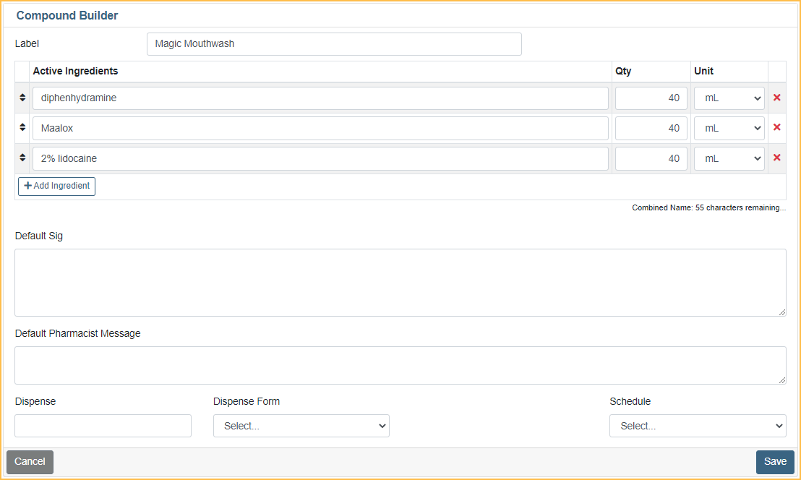
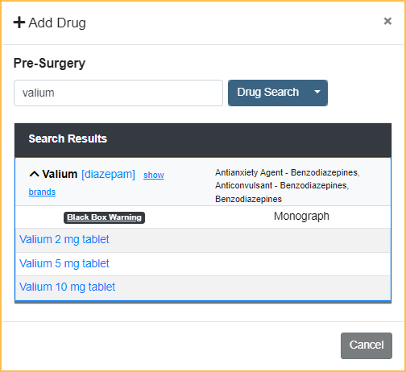

NewCrop eRX / Prescription
Use Ensora eRx (formerly NewCrop eRx) to send electronic prescriptions for patients.
In the Chart Module, click eRx.

Other Resources:
 See our Webinar: NewCrop.
See our Webinar: NewCrop.- Click Help in any Ensora eRx tab to open the help guide for the current tab.
- Go to the Admin tab to find additional Support Documentation for Ensora eRx.
- To electronically prescribe controlled substances the prescriber must go through additional identity proofing and set up two-factor verification. See Ensora eRx EPCS Setup.
To Create and Send a Prescription
- Microsoft Edge opens with the Compose Rx tab selected. If the interface is not visible, check the task bar to ensure Microsoft Edge is the focus.
- To find a drug:
- In the Drug Search field, enter the drug name and click Drug Search.
- Click Favorites to choose from a list of saved prescriptions.
- Click Drug Sets to choose from a list of saved groups of prescriptions.
- Click Compounds to choose from a list of saved compound drugs.

All matching drugs are displayed. If there are more 20 results total, click the dropdown next to a drug name to display all dosing options. If using the comprehensive version and there is an insurance formulary attached to this patient, formulary status appears in the first column. Click a formulary link to see therapeutic alternatives. See Ensora eRx Drug Formulary Checks.
- Click the drug and dosing combination to select it.
- Enter the Sig information. Some information may automatically populate. Edit as needed.
- This window is not shown when prescribing a Drug Set or Compound.
- Frequency must always be selected.
- If the prescription requires a CDT Code, enter it in the Pharmacist Message area.
- If prescribing , this window does not appear.
Note:- If the Route or Frequency selected is as directed an Additional Sig must be entered.
- The Additional Sig field is limited to 140 characters.
- To associate an ICD code to the prescription, assign the code in the Procedure - Medical Tab of a completed or treatment planned procedure in Open Dental before clicking eRx. Up to two ICD 10 codes can be added to a prescription.
- To save this drug to the Doctor's Favorites List, check Add to Favorites.
- Click Prescribe.
- When using Ensora eRx Comprehensive, the system checks for interactions with current medications, allergies, and diagnoses and displays applicable alerts. See Ensora eRx Drug-Drug, Drug-Allergy Interaction Checks. If necessary, edit medications.
- By default, Location Pharmacies are listed. Uncheck Show Location Pharmacies to see patient's preferred pharmacies. Click Search to find a specific pharmacy. Click the pharmacy name to select.
- Once a pharmacy is selected, click one of the following buttons:
- Transmit: Non-controlled substances are sent automatically to the selected pharmacy.
If sending a controlled substance proceed to Step 8. - Record: Adds the prescription to patient's active medications list. This is not sent electronically.
- Print: Print the prescription. This is not sent electronically.
- Leave for Staff: Send the prescription back to the pending status.
- Transmit: Non-controlled substances are sent automatically to the selected pharmacy.
- The prescribing provider must enter their 4-digit pin. If this is the first time the prescriber has transmitted a controlled substance, they are prompted to create a pin instead.
- Enter the one-time passcode. There are three options for receiving the passcode:
- Click Send Push Notification in the Ensora eRx interface. The prescriber receives a notification in the Authy App on their mobile device. Click Approve or Deny.
- Click the Hardware Token radio button in the EnsoraRx interface. Press the button on the hardware token, and enter the generated code into the Enter Code field.
- Open the Authy App and enter the displayed code.
- Click Sign & Transmit Rx. The prescription is sent electronically to the selected pharmacy.


The completed prescription is automatically copied to the patient's Medication List and Progress Notes in Open Dental after one of the following:
- The first time the Chart Module is opened after a patient is selected.
- After clicking the eRx button, then closing the eRx window.
- Manually clicking the eRx drop down in the toolbar, then Refresh.
Compounds Maintenance
In the Ensora eRx window, click Admin in the top toolbar.
Click Compounds Maintenance in the List Maintenance area on the left.
To add a Compound Medication:
- Click New Compound.
- Enter a name for the compound (e.g., Magic Mouthwash) in the Label box.
- Click Add Ingredient.
- Type drug name in the Active Ingredients column and enter the quantity.
- Repeat for each drug in the compound.
- Enter the sig for the compound.
- Select the dispense amount dispense form from the dropdown.
- Select the schedule of the compound using the Schedule dropdown.
- Click Save to save to the Compounds List.

To edit a Compound Medication:
- Click Edit next an existing medication in Compounds List Maintenance.
- Make any changes to the medication (e.g., add ingredients, default sig, etc.).
- Click Save.

Drug Sets Maintenance
In the Ensora eRx window, click Admin in the top toolbar.
Click Drug Sets Maintenance in the List Maintenance area on the left.
To Add a Drug Set:
- Click Add Set
- Enter a name for the drug set (e.g., Pre-Surgery)
- Click Add.
- Click Add under the name of the Drug Set to add a drug.
- Use the search box to look up the first drug. 
- Click the drug name to add it to the drug set.
- Enter the sig for the drug.
- Click Add to Drug Set.
- Repeat Steps 4-8 for as needed to add any additional drugs to the drug set.


To edit a Drug Set:
- Click the arrow below a drug set to see the existing drugs.
- Use the Add and Remove buttons to edit the drugs in the drug set.
- Add See Steps 4-8 in To Add a Drug Set above for instructions on adding a new drug.
- Remove: Click to delete an existing drug from the drug set. Click Yes, delete when prompted to confirm the deletion.

Prescriber Report
Run the Prescriber Report in Ensora eRx to get information on the prescriptions created for a provider in a date range.
- In the Ensora interface, click the Admin tab.
- In the Reporting section, click Prescriber Report.
- Enter the Start/End Dates.
- Click Generate Report.
- To save the report, choose one of the following:
- Export to Excel: Exports the report to an XLS file.
- Print: Send the report to a printer.
Additional Information
- To verify if a prescription has gone through or see if it has failed, see Report a Failed or Missing Prescription in Ensora eRx. Offices should periodically check for rejected prescriptions, so no prescriptions slip through the cracks.
- When a medication is marked as discontinued in Ensora eRx, the medication is also marked discontinued (a Stop Date entered) in Open Dental when the Chart Module is refreshed.
- EHR users should make sure RxNorms are attached to medications.
- To set up automation options in Open Dental when prescriptions are created, see Automation, RxCreate trigger.